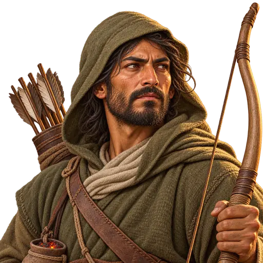
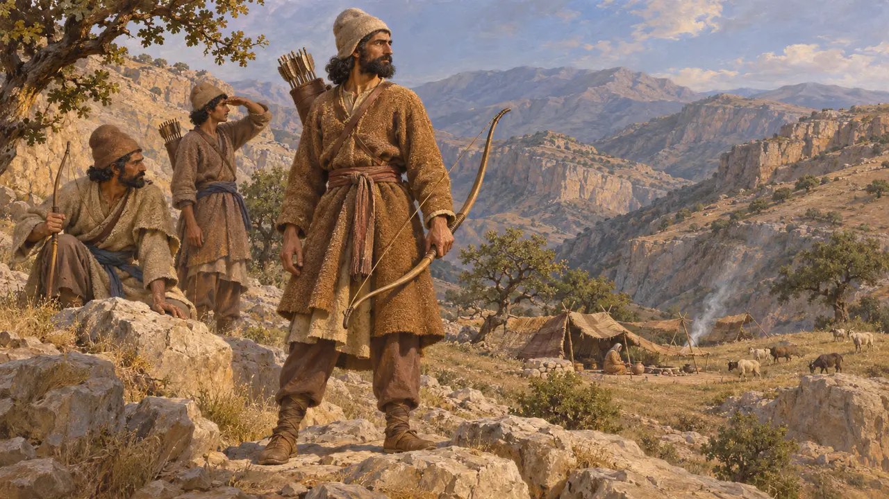
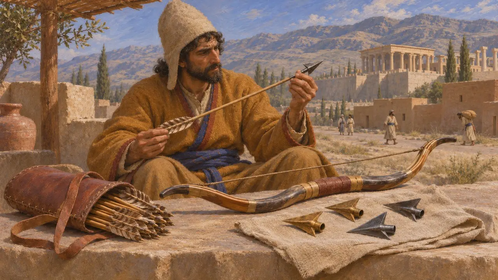
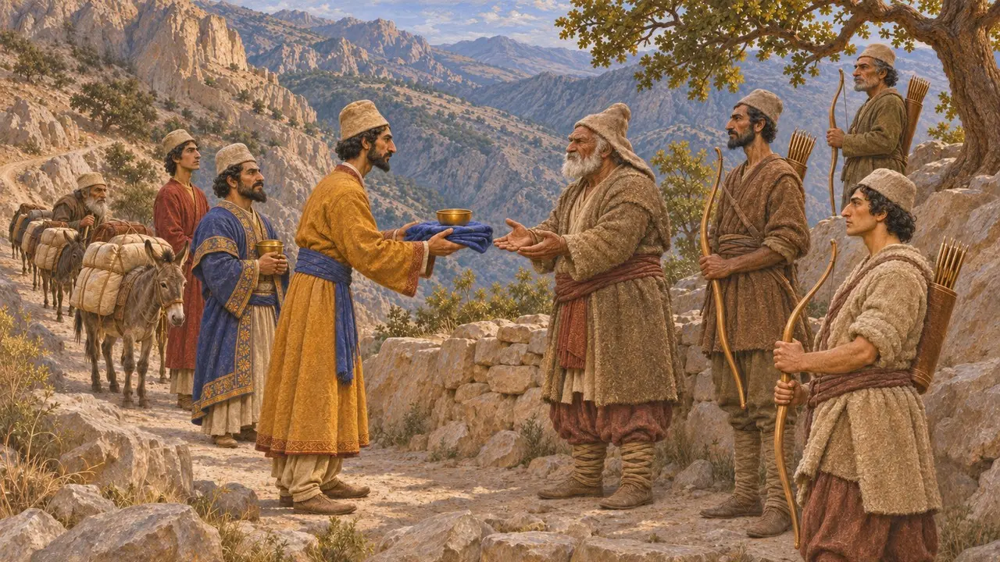
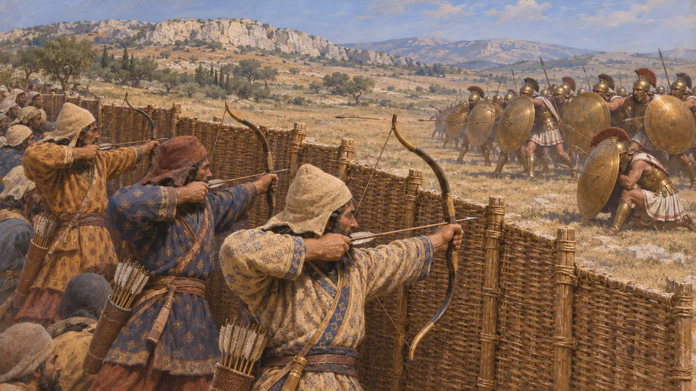

Энциклопедия › Воины и корабли

Горный лучник
Лучники нагорий Загроса и Персиды, около 550–479 до н. э.
Горный лучник — так в игре названы стрелки горных народов, живших рядом с сердцем Персии и вдоль путей между царскими городами. Ни один античный автор не описывает отряда с таким названием. Позднейшие греческие авторы пишут о горцах вроде уксиев и коссеев, удерживавших собственные проходы, а Страбон приписывает коссеям множество лучников.
В игре: В игре он показан как вражеский лучник, чьё название меняется с уровнем. Он выбивает горожан на улицах и лучников, а копейщикам его стрелы почти не вредят; это игровое упрощение, а не засвидетельствованный род войск.

Горные народы
Античное свидетельствоГеродот причисляет мардов к персидским племенам, которых называет кочевниками, а не земледельцами, наряду с даями, дропиками и сагартиями. Арриан описывает уксиев — горцев на пути из Суз в Персиду, которые около 331 года до н. э., много позже эпохи игры, удерживали перевалы против Александра. Эти авторы смотрели на такие народы со стороны и мало сообщают о том, как те были устроены и как сражались.
Herodotus 1.125; Arrian, Anabasis 3.17

Луки и наконечники стрел
Свидетельства эпохиВ своей гробничной надписи в Накше-Рустаме Дарий причисляет к собственным добродетелям владение луком — пешим и верхом. Это показывает, что стрельба из лука входила в царский образ идеального перса. При раскопках Персеполя найдено множество бронзовых и железных наконечников стрел, многие из них — трёхлопастного типа, распространённого во всём регионе. Такие наконечники нельзя связать с каким-то одним народом, поэтому они свидетельствуют о применении оружия, а не о самих горных лучниках.
DNb; E. Schmidt, Persepolis II, 1957

Плата за проход
СпорныйАрриан сообщает, что уксии потребовали ту плату за проход через свою страну, которую прежде получали от персидских царей. Страбон пишет, что цари одаривали коссеев и что коссеи могли выставить множество лучников. Эти свидетельства поздние и могут не относиться к периоду до 479 года до н. э. Прежде в этих выплатах видели слабость царской власти, но Бриан полагает, что это был договорной обмен, привязывавший горцев к царю.
Arrian, Anabasis 3.17; Strabo 11.13.6; P. Briant, From Cyrus to Alexander, 2002

Стрелы против щитов
Античное свидетельствоГеродот описывает, как персидская пехота при Платеях выставила стену из плетёных щитов и стреляла из-за неё. По его словам, многие спартанцы были убиты или ранены, прежде чем эту стену удалось опрокинуть. Его рассказ показывает, что в сражениях той эпохи важны были и стрельба из лука, и щиты. Он не подтверждает представления, будто копейщики могли попросту не обращать внимания на стрелы.
Herodotus 9.61-62
Источники
- Herodotus 1.125
- Arrian, Anabasis 3.17
- Strabo 11.13.6
- DNb
- P. Briant, From Cyrus to Alexander, 2002
- E. Schmidt, Persepolis II, 1957